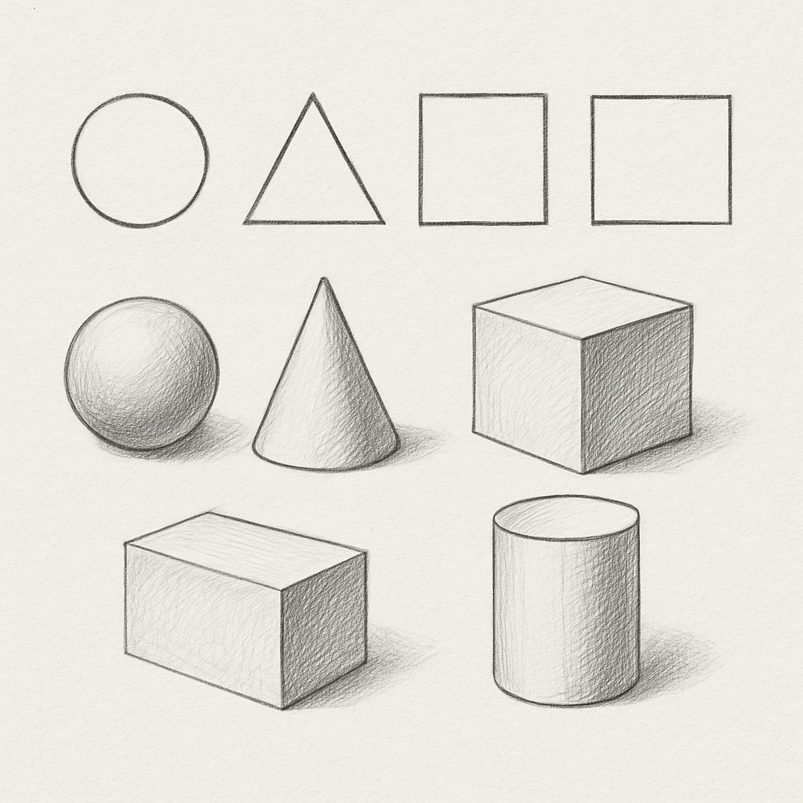

Featured articles
Start with the lesson path.
These notes connect the larger teaching ideas to the actual Field Kit sequence: lines first, then observation, then simple shapes.
Why blank pages freeze beginning artists.
Why beginners often need structure before independence, and how guided drawing lowers the number of decisions a student has to make at once.
Read the article ->
Unit 01 / Lines in Control
Why the first lesson starts with lines.
Pencil control, line variety, and the reason the Field Kit begins with simple marks.

Unit 02 / Seeing Empty Space
The lesson that teaches students to look before they draw.
Negative space gives students something concrete to observe when objects feel complicated.
Unit 03 / Building Simple Shapes
What to do when the drawing feels too big.
Simple shapes and construction lines turn a complicated subject into visible next steps.
How to use these
Use the format that fits the moment.
Read an article when you want the larger teaching idea. Use a short note when you need one move to try at the table today.
Articles
Warmups
Parent prompts
Teaching concepts
Latest notes
Choose the problem you are trying to solve.
Use it today